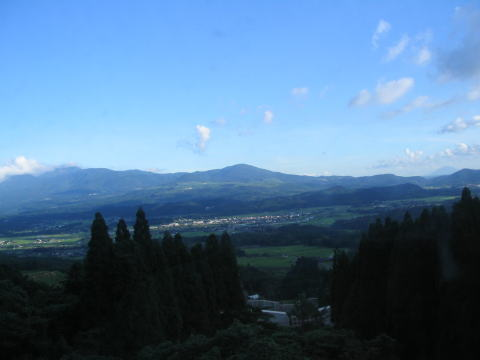
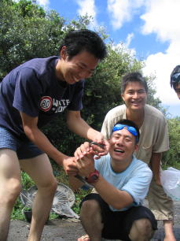
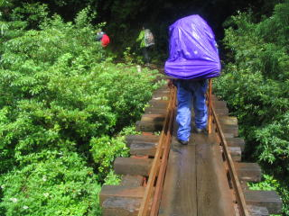

日程 8/5-8/10-.....
行程 京都～鹿児島～屋久島（現地解散）
参加者 ９名
京都駅にて。OBさん達に見送られて出発。
線路は続くよどこまでも

えびの高原と霧島連山。右にうっすら見えるのは地形図を見る限り桜島のようです。
で、その桜島を背景に一泊。
泳いだり高速船に乗ったりして屋久島に到着。
出町商店街で購入したネギは容赦なく痛んでいきます。
 とりあえず、屋久島のドブ川でウナギ漁をしてみる。
海に入らないと山には登れない。
向こうから朝が来ました。
ようやく登り始めます。
もののけ姫の森。児玉清がたくさんいました。
弥生杉。
ウィルソン株の辺。
そして、縄文杉。
延々と続くトロッコ道
轢かれました。いや、惹かれました。
 人通りの多い線路です。
虹が出ていますね。合成じゃないです。
民宿で家をお借りしました。碧空です、碧空。
頑張って東シナ海から帰る人たち。
ロケット。
超巨大メタン。
なごりの松原公園にて
 この20秒後、フタがバタンバタンします。 この20秒後、フタがバタンバタンします。
この後、黒潮に吸い込まれました。
再度登場の桜島。遠くのほうに篤姫が見えます。
この後、天文館のネオン街に吸い込まれました。
 活動記録に戻る 活動記録に戻る
|
|